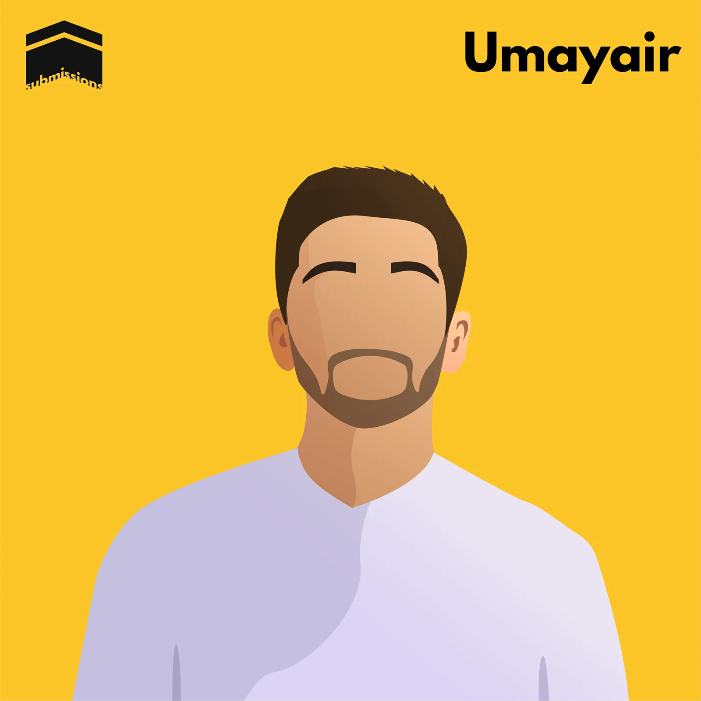

Brand identity
Logos and identities for societies, charities and small businesses. A shapla flower, a DNA strand made of circuit traces, two hands that form an S.
Hello from London. Currently building Odjo
Doctor Designer & Founder
27, London. Studied medicine, worked as a doctor for two years, then co-founded Odjo, an AI front desk for small businesses. Alongside it all: brands, illustrations and 3D products.
(01) About
Six years of medical school, and most evenings in Illustrator. These days I make brands, illustrations, 3D products and software.

I'm Umayair, 27, from London. I trained as a doctor at King's College London, took a year at Imperial College Business School, and designed alongside it the whole way through, building identities for student societies, charities, caterers and start-ups.
Along the way I led the KCL Bangladesh Society, co-founded KCLevate (an outreach programme for students applying to Medicine, Dentistry and Law), started The Submissions Podcast to share the stories of Muslims, ran a creative agency and supported Charity Week across London's universities.
Now I'm a co-founder of Odjo, an AI front desk. It answers a business's calls, messages and emails, day and night, and books, triages or passes each one on.
(02) Selected work
(03) Other stuff I’ve made
00 projects
(04) Sketchbook
Late-night iPad drawings, Procreate experiments and the odd photo, first posted on Instagram and kept here.
@umayaircreates ↗(05) What I do
Logos and identities for societies, charities and small businesses. A shapla flower, a DNA strand made of circuit traces, two hands that form an S.
Flat, character-led illustration. The Submissions portraits use five colours each and no faces.
Concept products modelled from scratch, like the Eden plant probe: the object, the packaging and the brand.
At Odjo I work on the product, the brand and getting it in front of customers.
(06) Journey
Started Medicine at King's College London, and started taking on design work alongside it.
Elected one of four student trustees of King's College London Students' Union. Started volunteering with Maa, a maternal health charity.
Ran antenatal screening camps in rural Bangladesh with Maa. Co-founded KCLevate, a mentoring programme for sixth-formers in east London.
Took a year out for a BSc in Management at Imperial College Business School. Started The Submissions Podcast, and started teaching Arabic online.
Qualified from King's and worked as a resident doctor at two London hospital trusts until 2025.
Eden, a smart plant probe I modelled in 3D and gave a brand and packaging.
Building Odjo, an AI front desk that answers every call and message a business gets, and puts each one on the right record.
(07) Off the clock
I can’t leave a new thing alone. Nearly everything here came from videos, manuals and getting it wrong a few times first.
I take a lot of photos. They go through Lightroom; video goes through Final Cut Pro or Premiere Pro.
An Apple household, all the way down. The whole house is a smart home, and the Family Frame sits on top of it.
A Bambu Lab A1 that runs most days. Everything it has made is just below.
(08) Workshop
Every successful print off my Bambu Lab A1 from August to November, logged by my Family Frame. Clickers, stands, a T-Rex skull, and fixes for things around the house.
(09) Right now
LiveOdjo is an AI front desk. It picks up every call, WhatsApp, web form and email, in more than 20 languages, works out what the person needs, then books them in, flags it as urgent or passes it to the right person. Anything sensitive is drafted for a human to send. It’s live with letting agents, tutoring and exam centres, clinics, accountants and law firms.
Visit Odjo ↗